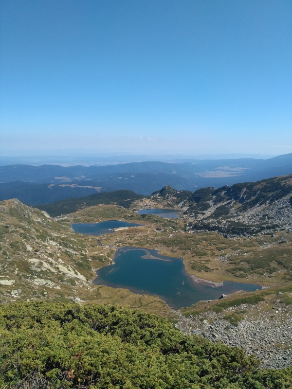
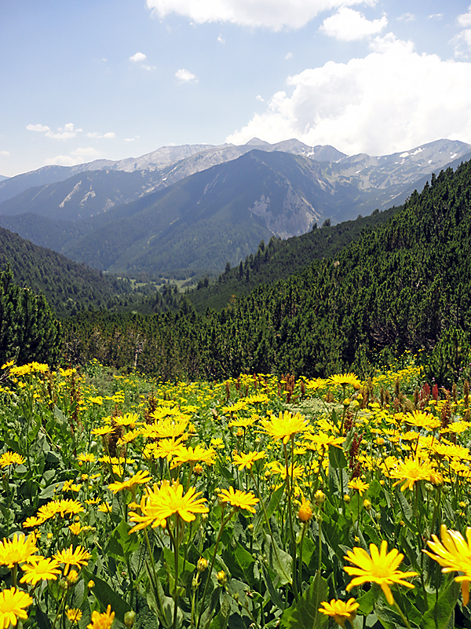
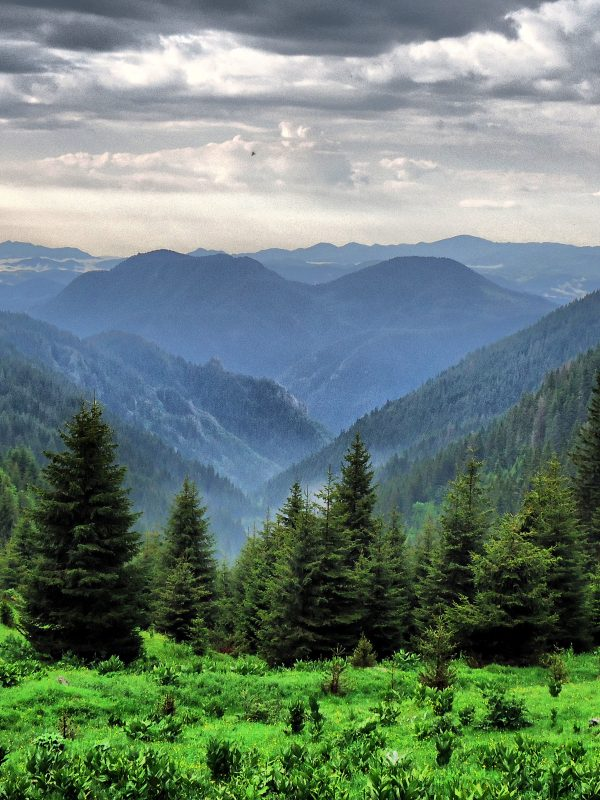

Рила

Рила е най-високата планина в България и на Балканския полуостров. Намира се в югозападната част на страната,
и по-точно в северозападния край на Рило-Родопския планински масив. Най-високият връх на планината – Мусала?, със своите 2925,
2 m е и най-високият на Балканския полуостров и цяла Източна Европа.
Пирин

Пирин планина се намира в югозападната част на България и е в общ масив с Рила и Родопите.
За разлика от Стара планина например, която се простира от запад на изток през цяла България, Пирин е малка, компактна.
Тя заема 2585 квадратни километра територия, която обаче е със силно нагънат релеф – с многобройни стръмни върхове, отвесни пропасти,
дълбоки долини.
Родопите

Родопите е планина в Южна България и Северна Гърция, част от Рило-Родопския масив.
Тя е най-обширната планина в България и заема около една седма част от българската територия.
Дължината ? е около 220 – 240 km, а ширината до 100 km.